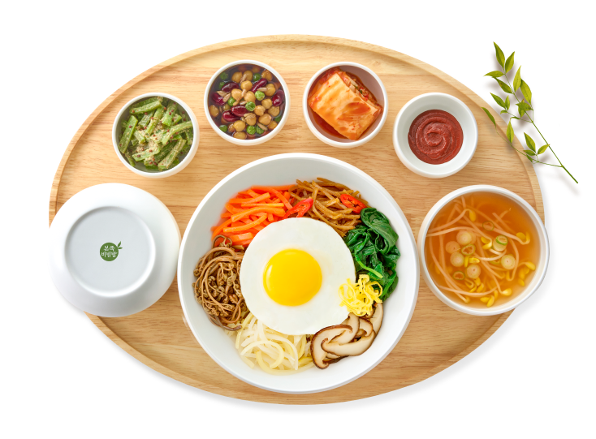
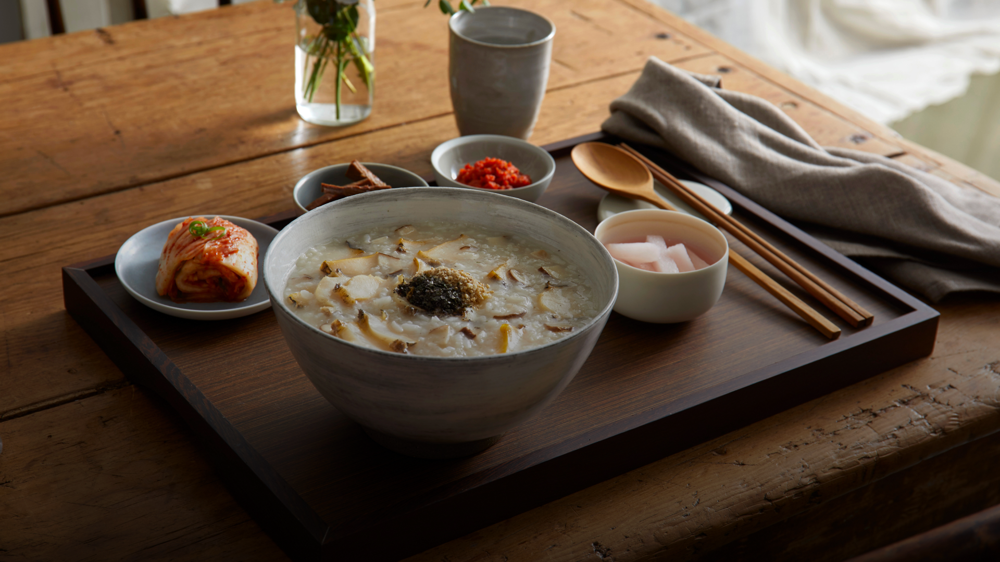
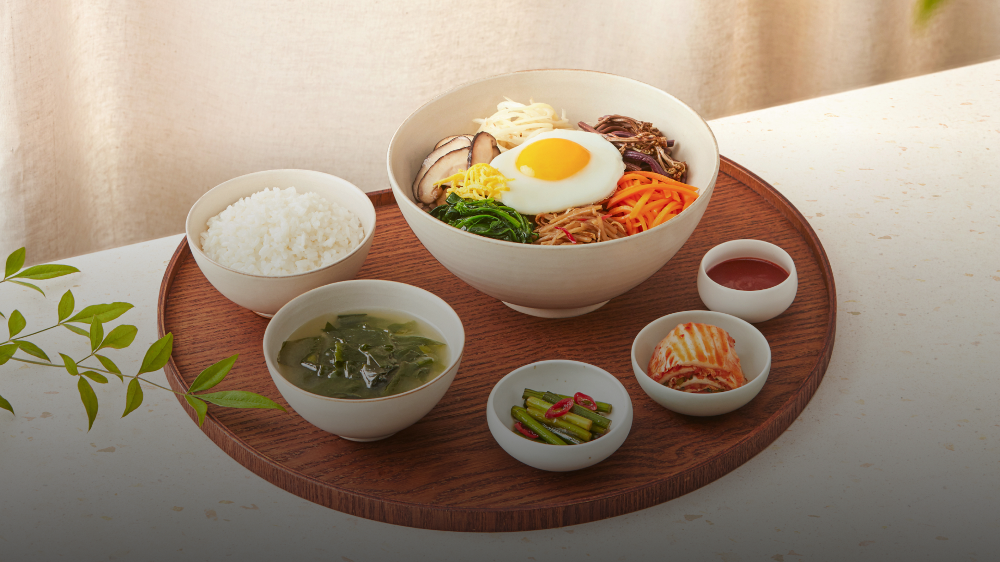
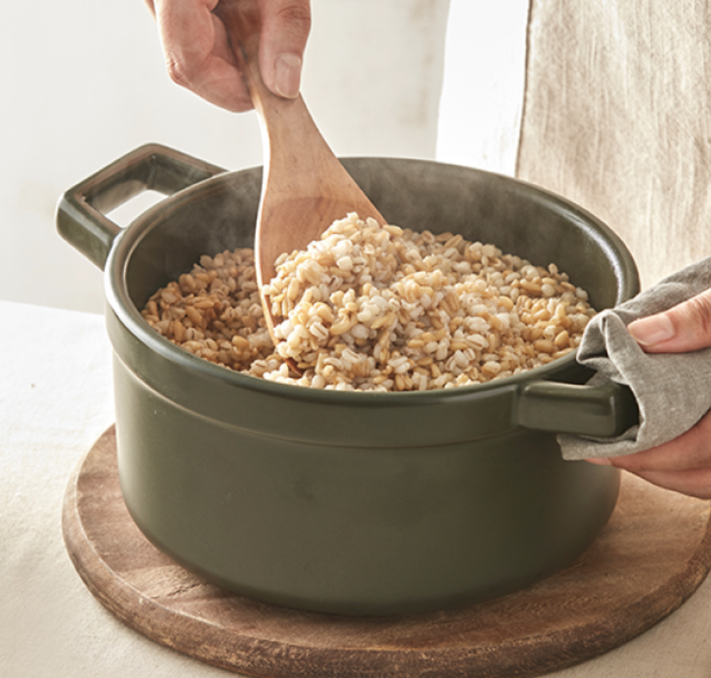
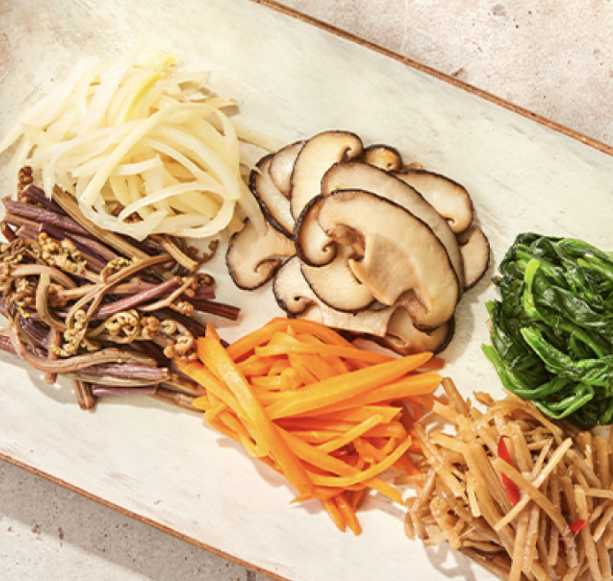
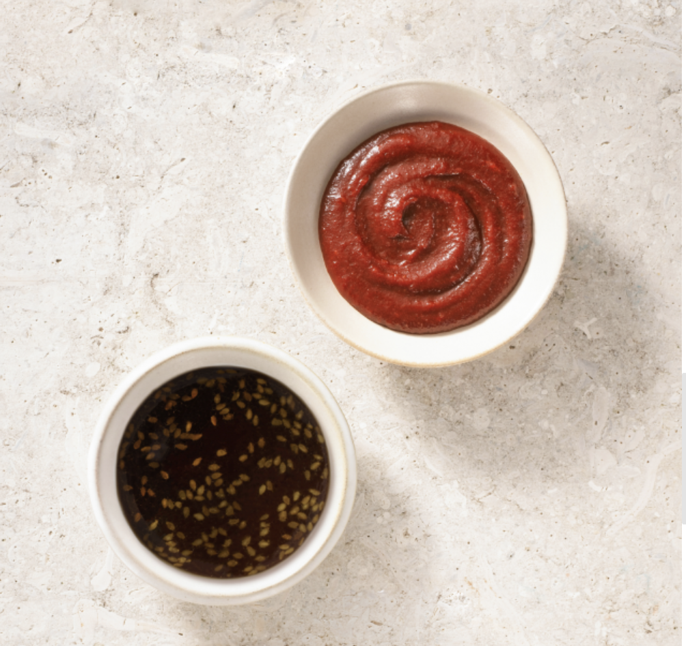
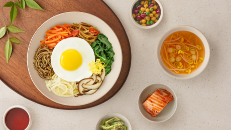
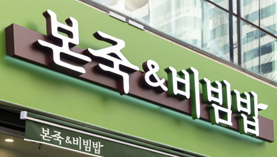
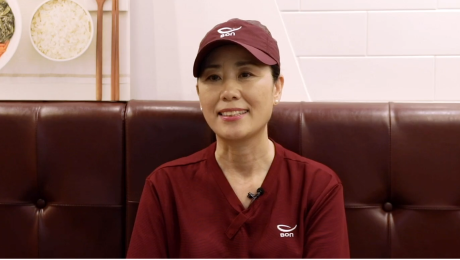

정성으로 지은 더 건강 한 상

한식은 참 손이 많이 가는 음식입니다.
까다로운 재료 선별부터 자연의 맛과 영양을 살린 조리법
정갈한 상차림까지
본죽&비빔밥은 오늘도 당신만을 위한 건강 한 상을 준비합니다.


가장 속 편한 행복, 본죽
매일 아침 손수 죽밥을 짓고 재료를 깨끗이 손질하여 몸과 마음까지 온기가 닿을 수 있도록 뭉근히 끓여냅니다.

자연의 맛과 영양 살린, 비빔밥
재료 본연의 식감을 살려 볶아내고 정성스런 장을 준비하여 자연의 맛을 잘 지은 밥 위에 정갈하게 올려냅니다.

면
[麵]
건강한 통밀가루를 8번 압연하고 숙성한
탄탄한 식감의 자가제면 생면
탄탄한 식감의 자가제면 생면

닭 육수
[トリパイタン]
센 불에 6시간 이상 끓여 뼛속의 깊은 진미까지 뽑아내 진하면서도 잡내 없이 깔끔 담백한 닭 육수

차슈
[チャーシュー]
듀록 생고기로 만든 목살 차슈와
카스텔라처럼 부드러운 수비드 닭가슴살
카스텔라처럼 부드러운 수비드 닭가슴살
메뉴 소개
도쿄 정통 방식으로 만든
닭 육수 라멘 '토리파이탄'으로
미식 여행을 떠나보세요!


창업 성공 스토리
새로운 성공스토리의
주인공이 되어주세요!
전문가가 끝까지 함께합니다.
